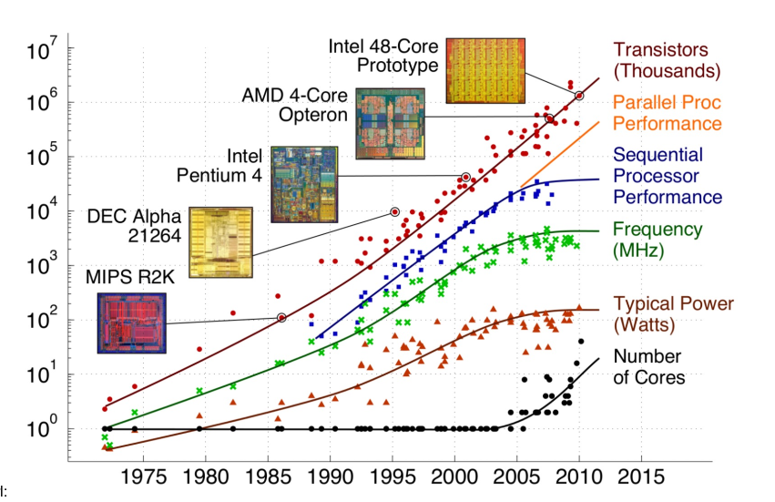
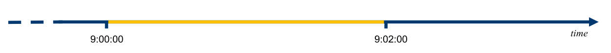
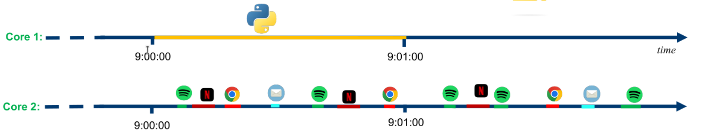
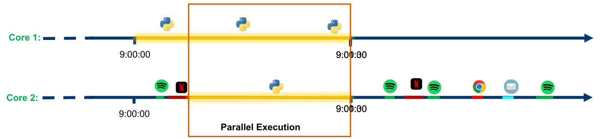
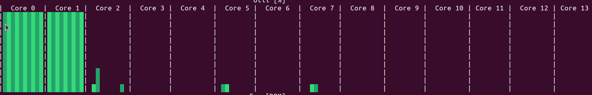

Multiprocessing#
Introduction to computer programming
Management and Artificial Intelligence
How does a computer execute code?#
The code of a program is executed by a CPU. A CPU has one or more cores, each of which can execute a single instruction at a time.
How can make our code run faster?
More transistors, more speed (20 years ago)#
Moore’s Law (1965) states that the number of transistors on a microchip doubles about every two years with a minimal cost increase. For a long time, more transistors meant more speed.

Free lunch is over: more transistors, more cores#
In the past, we could rely on the fact that the CPU speed would double every two years. This is no longer the case. The CPU speed has not increased significantly in the last decade. Instead, the number of cores has increased. The problem is that most of the software is not designed to take advantage of multiple cores.
Single Task Execution [single core]#
If we run our Python program, the CPU will execute the code sequentially, i.e., one instruction at a time. This is known as single task execution:

The line in yellow is the execution of our Python program.
Multi Task Execution [single core]#
Modern operating systems allow for multi task execution. This means that the CPU can execute multiple tasks at the same time. This is achieved by rapidly switching between tasks. This is known as time sharing:
The line in yellow is the execution of our Python program. It is not a continuous line because the CPU is executing other tasks.
Multi Task Execution [multi core]#
When we have multiple cores, we can execute multiple tasks at the same time. This is known as multi core execution:

The line in yellow is the execution of our Python program. It could be not a continuous line when the CPU is executing other tasks on the same core.
Parallelism#
Parallelism is the ability to execute multiple tasks at the same time:

Processes#
A process is an instance of a program in execution
Each process has its own:
memory space (variables, heap, stack)
file descriptors, environment, etc.
The operating system schedules processes on available CPU cores
Relation to parallelism & concurrency:
On one core, multiple processes are concurrent (time-shared)
On multiple cores, different processes can truly run in parallel
In Python:
The
multiprocessingmodule creates child processesEach process has its own Python interpreter and its own GIL (Global Interpreter Lock)
Threads#
A thread is a lighter unit of execution inside a process
Threads in the same process share:
the same address space (global variables, objects)
open files, sockets, etc.
Relation to concurrency & parallelism:
Threads are often used to express concurrency:
many activities in progress within the same process
On multi-core CPUs, different threads could run in parallel
Threads vs. Processes#
Characteristics |
Threads |
Processes |
|---|---|---|
Creation |
Lightweight |
Heavyweight |
Communication |
Shared memory |
IPC |
Overhead |
Low |
High |
Parallelism |
Within a process |
Inter-process |
Scalability |
Good |
Better |
Code complexity |
Simpler |
More complex |
System resources |
Shared |
Independent |
Data race issues |
Possible |
Less likely |
A Python program likely uses a single core#
Most Python code is designed to run on a single core. Up to now, we have we have written code that runs on a single core. Besides technical reasons, the main problem is that writing code that works on different cores is complex and error-prone. For instance:
How do we split a larger task into multiple subtasks?
How do we synchronize the subtasks?
How do we collect the results?
These problems are not easy to solve. After 50 years, there is still no general solution to these problems. In other words, we cannot take a traditional program designed to run over a single core and make it run over multiple cores without rewriting it.
Parallelism in Python#
There are several ways to write parallel code in Python. The most common ways are:
threading: thethreadingmodule allows us to run multiple threads within a single process. Different threads can easily share data because the share their memory space.multiprocessing: themultiprocessingmodule allows us to run multiple processes. Each process has its own memory space and runs in its own memory space. Hence, sharing data is expensive.
Threads in Python: the GIL Problem#
In CPython, i.e., the reference implementation of Python:
The Global Interpreter Lock (GIL) is a mutex that protects access to Python objects, preventing multiple threads from executing Python bytecode simultaneously
Pratical implications:
For CPU-bound tasks: threads provide no performance benefit and may even add overhead due to context switching
For I/O-bound tasks: threads remain useful since the GIL is released during I/O operations
Result: Python threads cannot leverage multiple CPU cores for parallel computation
Workaround: Use multiprocessing for true parallelism in CPU-intensive workloads
Multiprocessing is not threading#
We use the
multiprocessingmodule to create separate processesEach process has its own Python interpreter and memory space
No GIL issues
True parallelism on multiple CPU cores
Major challenge: Sharing Data Between Processes
Different processes do not share memory by default
We need special mechanisms to share data across processes:
Shared memory objects
Queues and Pipes
Manager objects
A small CPU-bound task#
Let us consider a syntetic CPU-intensive task: executing 2 times compute_something(2500000)
import time
def compute_something(n):
r = 0
# this is just a synthetic computation
for i in range(n):
r += (200 ** 200) % (1000 + i)
return r # not a very useful computation
start = time.time() # get the current time
result = compute_something(2500000) # first computation
result = compute_something(2500000) # second computation
end = time.time() # get the current time
print("Elapsed time:", end - start, "seconds")
Elapsed time: 6.738356590270996 seconds
CPU-bound tasks: sequential execution#
We are executing compute_something twice sequentially. This is a CPU-bound task.
Only one core is used:

threading: parallel function execution?#
import threading
from worker import compute_something
import time
t1 = threading.Thread(target=compute_something, args=(2500000,))
t2 = threading.Thread(target=compute_something, args=(2500000,))
start = time.time()
t1.start()
t2.start()
# wait for the process to finish
t1.join()
t2.join()
print("Elapsed time:", time.time() - start, "seconds")
Elapsed time: 5.707372188568115 seconds
BUT WAIT… IT IS NOT FASTER!
WHY?
As we already said, the GIL prevents parallel execution of Python code.
multiprocessing: parallel function execution#
import multiprocessing
import time
from worker import compute_something
p1 = multiprocessing.Process(target=compute_something, args=(2500000,))
p2 = multiprocessing.Process(target=compute_something, args=(2500000,))
start = time.time()
p1.start()
p2.start()
# wait for the process to finish
p1.join()
p2.join()
print("Elapsed time:", time.time() - start, "seconds")
Elapsed time: 3.474416732788086 seconds
CPU-bound task: parallel execution#
We are executing one compute_something on each core.
Two cores are used:

multiprocessing: work assignment#
What if we have more tasks than processes?
multiprocessing.Pool allows us to create a pool of processes. We can then assign tasks to the pool. The pool will take care of assigning the tasks to the processes.
For instance:
import multiprocessing
from worker import compute_something
pool = multiprocessing.Pool(2)
inputs = [2500000, 2500000, 2500000] # we want to compute the same thing three times
results = pool.map(compute_something, inputs)
print(results)
[1561361386212, 1561361386212, 1561361386212]
multiprocessing: issues about sharing data#
The processes do not share memory. By default, multiprocessing.Pool takes care of:
Transfering the data related to arguments (in our example:
inputs)Transfering the data related to the return value (in our example:
results)
These operations can be expensive when the data to move around is large.
Depending on what we are doing, we may find a way to avoid such a data transfer. For instance, when our function needs to process a file and compute the results, instead of passing the data of the file and get back the data of the processed file, we can just read and write the file from the disk and pass to the function only the file name.
There are several cases when we would like to share data between processes. For instance, we may want to share a large dataset between processes. In such cases, we can use the multiprocessing.Manager class to build data structures (such as lists) that are shared.
However, sharing data is expensive and should be avoided when possible.
Suppose we want to use a list between processes:
def compute_something_with_index(index, l, n):
r = 0
for i in range(n):
r += (200 ** 200) % (1000 + i)
l[index] = r # we store the result in the list
import multiprocessing
from worker import compute_something_with_index
l = [None, None] # list
p1 = multiprocessing.Process(target=compute_something_with_index, args=(0, l, 2500000))
p2 = multiprocessing.Process(target=compute_something_with_index, args=(1, l, 2500000))
p1.start() # start the process
p2.start() # start the process
p1.join() # wait for the process to finish
p2.join() # wait for the process to finish
print(l)
[None, None]
The list l has not changed! This is because the list l is not shared between the processes. Instead, each process has its own copy of the list l.
We can use the multiprocessing.Manager class to create a shared list:
import multiprocessing
from worker import compute_something_with_index
with multiprocessing.Manager() as manager:
l = manager.list() # create a shared list
l.append(None)
l.append(None)
p1 = multiprocessing.Process(target=compute_something_with_index, args=(0, l, 2500000))
p2 = multiprocessing.Process(target=compute_something_with_index, args=(1, l, 2500000))
p1.start()
p2.start()
p1.join()
p2.join()
print(l)
[1561361386212, 1561361386212]
We can use the multiprocessing.Manager class offers several data structures that can be shared between processes:
listdictValueArray…
They work like the normal data structures but they are shared between processes. However, sharing data is expensive and should be avoided when possible.
Parallelism versus Artificial Intelligence#
Should you use parallelism in your data science projects?
Most of the time, unlikely. At least, not directly. What it may happen is that you may use a library that uses parallelism under the hood. For instance, parallel_pandas uses parallelism when you apply a function to a DataFrame.
Hence, you should have an idea of what we mean by parallelism and how it works.
Summary#
Modern CPUs have multiple cores → potential for parallel execution
Concurrency vs parallelism:
concurrency = many tasks in progress (may be interleaved)
parallelism = tasks running at the same time on different cores
Threads (
threading):good for I/O-bound tasks
limited for CPU-bound tasks in CPython due to the GIL
Multiprocessing (
multiprocessing):separate processes can use multiple cores
use
Process,Pool, and data-sharing tools (Value,Array,Manager,Queue) to structure parallel programs.